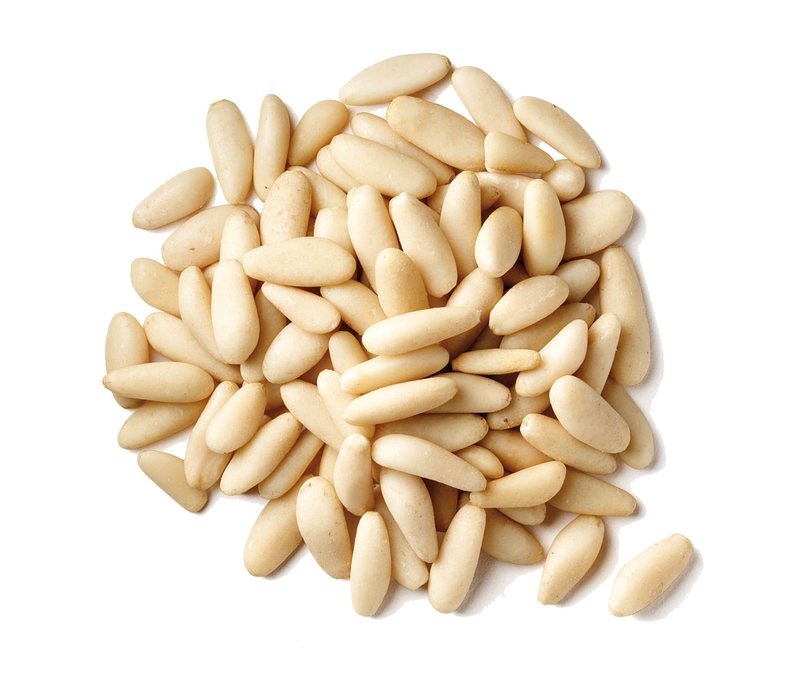

This is the pesto manifesto; an improvised recipe of sorts. When making pesto, here are some things to keep in mind:
Must use organic garlic if you live in the 21st Ce.
Must use fresh basil from your mom or neighbor’s garden.
Must use pine nuts.
No food processing allowed.
These are important because pesto is a delicacy that deserves to be made right.Pasta should not be smothered in mediocrity! Or should it?

Become inspired by mediocre productions.
Don’t covert production and experimentation recipe.
Always leave the edges rough, so that someone can cut themselves.
A photoshop’d joke is deep and meaningful.
Take the knife to cultural icons and produce: produce the produce for the recipe and destroy the recipe.
Follow and muddy up every else’s recipe; pun and play, annihilate and resurrect meaning.
Keep in mind: pesto is delicious when it’s made fresh.